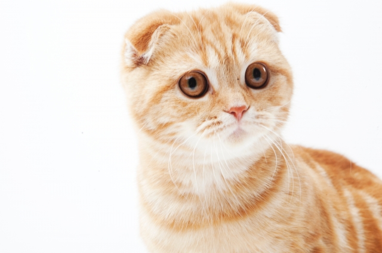
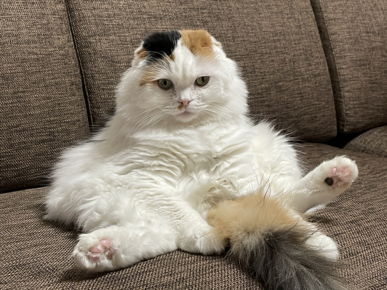

目次
０．クイズ
皆様こんにちは。
本編に入る前に、今回もクイズをご用意しました。勿論猫に関連したクイズです。
「猫を飼うと、飼い主はまず猫に名前をつけます。これから一緒に過ごす家族につける大事なものですが、アニコム損保保険株式会社が2021年に発表した「猫の名前＆人気猫種ランキング」によれば、「ムギ」という名前が一番人気(オスとメス総合して)だそうです。３位には「レオ」という名前が人気だそうですが、さて、２位は一体何でしょう？」 以上が問題となります。因みにヒントは私たちが上を見上げるとあるもの。答えはこの記事のラストに！今回も是非最後まで読んでいってください！ さて、前置きが長くなりましたがいよいよ今回のメインディッシュ、「スコティッシュ・フォールド」の紹介に移ります。
１．概要
こちらがスコティッシュ・フォールドとなります。耳が前に曲がっているのが特徴的な猫。原産国はスコットランドです。猫の品種の中では一番人気であり、先程のクイズでも登場したアニコム損保保険株式会社が発表している猫種ランキングでは堂々の1位。尚、13年間も1位の座を守ってるようです。とんでもない人気ですね。余談ではありますが、自分もスコティッシュ・フォールドが一番好きです。 名前の由来は原産国であるスコットランドと、耳が”折れている”というところから英語で折りたたむという意味を持つ「fold」が組み合わさったものです。因みにスコティッシュは英語で書くと「Scottish」。意味は「スコットランドの」となります。
２．特徴
顔は丸顔で、体つきはがっしりとしています。丸顔と言いましたが、全体的に丸みを帯びており、小柄っぽく見えます(実際の大きさは中くらい)。 毛が短いのが特徴のアメリカン・ショートヘアや毛が長いのが特徴のソマリとは違って、スコティッシュ・フォールドは短毛種と長毛種どちらも存在しています。長毛種のスコティッシュ・フォールドのことを別名「ハイランド・フォールド」または「ロングヘアー・スコティッシュ・フォールド」と呼ばれることがあります。また、長毛種はレアであり、短毛種の方が割合として多いようです。毛色は様々な配色が存在しており、「ブラック」、「ホワイト」、「ブルー」、「クリーム」、「レッド」等々、色だけでなく毛の模様も千差万別であり、トラ柄や三毛(日本猫とは配色が違うが)等、マジで多いです。上の写真の猫は茶トラに分類されます。スコティッシュ・フォールドを飼うのであれば、好みの毛並みの子と出会えることでしょう。 さて、いよいよ本命、スコティッシュ・フォールド最大の特徴、耳です。スコティッシュ・フォールドの何が好き？と問われれば、すかさずあの折れた耳だ！という人は多いでしょうが、実は生まれたときは耳が立っています。生後２週間から１ヶ月頃から耳が折れ始め、段々私たちの知る折れ耳ができあがるのです。耳の折れ具合には個体差があり、三段階ほどに分けられています。耳の先端がちょこっと折れているだけの耳を「シングルフォード」、耳の根本辺りから折れている耳を「ダブルフォード」、耳が頭の輪郭に重なるぐらい垂れている耳を「トリプルフォード」と呼びます。また、折れ耳が特徴的なスコティッシュ・フォールドではありますが、別に全部が全部折れ耳な訳では無く、耳が折れていない立ち耳のスコティッシュ・フォールドも存在しています。立ち耳のスコティッシュ・フォールドのことを「スコティッシュ・ストレート」として別カテゴリにすることもあります。丸っこい猫が好きで、尚且つ耳が立っていてこその猫だろう！と主張する方は、こちらの方が好みかもしれませんね。それと耳が折れる確率は30％である、という説があるそうです。そう言われると、案外折れ耳というのは珍しいことなんですね。因みに、耳が折れていて、顔が丸っこいことから、フクロウのようだと形容されることもあります。性格はおとなしめで甘えん坊。他の動物とも相性が良く、他の愛玩動物を飼いやすいともいえます。運動量が多い訳でなく、あまり動き回らないため、おとなしいという印象が強まります。
３．歴史
スコティッシュ・フォールドの起源は1961年にスコットランドの中部に位置する農家に生まれた一匹の雌の白猫、「スージー」であるとされています。成長しても耳がいつまで経っても立たず、スージーから生まれた複数の猫の内に耳が折れたままの猫がいたことから、折れ耳は遺伝形質ではと考えられ、計画的な繫殖が始まりました。スージーから生まれた子猫はその後、ブリティッシュ・ショートヘア(別の猫の品種)と交配し、それ以降もどんどん交配が進められました。主な交配相手はブリティッシュ・ショートヘア、もしくはアメリカン・ショートヘアであり、スコティッシュ・フォールド同士の交配は遺伝疾患が発生しやすいとされていています。1977年に品種として正式に認められ、1994年に現在の「スコティッシュ・フォールド」という品種名が付けられました。それまでは折れ耳の兎である「ロップイヤー」に因んで、「ロップ」と呼ばれていたそうです。比較的新種で、人工的な交配が頻繁に行われていたことから、遺伝疾患の問題が目立ち、品種としての認定に苦労したり、交配は原則ブリティッシュ・ショートヘア、もしくはアメリカン・ショートヘアを行うことにされていたりと、中々大変な目に遭った品種と言えるでしょう。 余談ではありますが、折れ耳は突然変異によってできているとされており、折れ耳が生まれたり、立ち耳が生まれたりするのはそれが原因であると考えられています。また、折れ耳は骨軟骨異形成(遺伝により骨が十分に発達しない病気)の結果として生じたものであるとして、品種として認めていない団体もいます。
４．スコ座り
上の写真を見てどう思いましたか？可愛い？どちらかというとおっさんぽい…と思いませんか？この面白い座り方、スコティッシュ・フォールドがよくする座り方だそうで、「スコ座り」と呼ばれています。一応どんな猫種でもこの座り方はします。足をだらんと延ばしながら背の方にもたれかかる座り方ですが(床にしなだれているタイプもあれば、自立するタイプもある)、手足にかかる体重を軽減するためのものと考えられています。決してかまってアピールだとか、愛想を振りまいている訳ではないですよ！また、他の理由としては腹部等を毛繕いするときもこの態勢になるようです。
まとめ
さて、以上がスコティッシュ・フォールドについてのキャットレポートになります。突然ですが、ドックイヤーって知ってますか？本を読んでいる際、栞代わりにページの角を折ることを、犬の耳っぽいというところからドックイヤーと呼ばれています。ふむ、イヤー、折れている…なるほど、つまり折れていればいいので、このドックイヤーをスコティッシュ・フォールドと呼んでも構わないということですね？そういう訳で、これからドックイヤーを見かけたら、「お、スコティッシュ・フォールドしている」と思うことにします。 どうでもいいことはさておき、折れ耳が特徴のスコティッシュ・フォールド、いかがだったでしょうか？案外歴史が浅く、一番人気なのに意外だと感じました。様々な交配をしていた為、毛並みも豊富で、丸っこい見た目も相まって愛らしい感じさせてくれるスコティッシュ・フォールドの魅力を知っていただけたのなら嬉しいです。 ここで、今回のクイズの答えを発表。問題は「２番目によく付けられた猫の名前は？」でしたが、正解は「ソラ」でした。ヒントが言っていたことはつまり、見上げるとあるもの→「空」→「ソラ」という訳です。ちょっと分かりづらかったでしょうか？そういう訳で、キャットレポート第４弾、スコティッシュ・フォールドについてでした。
「今回お借りした写真」
「茶トラのスコティッシュ・フォールド 」写真ACより↓
https://www.photo-ac.com/main/detail/514980?
「スコ座り」写真ACより↓
https://www.photo-ac.com/main/detail/4444809?